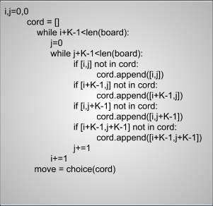
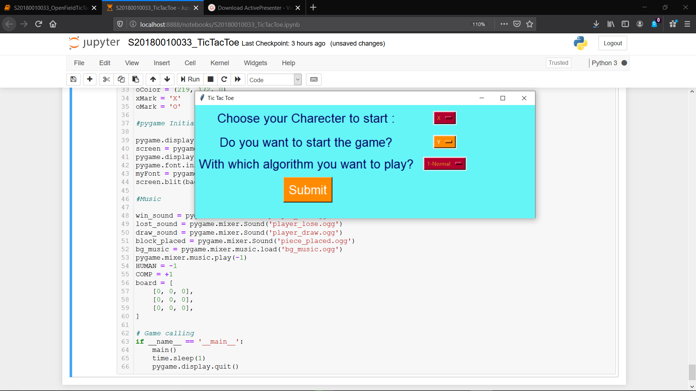
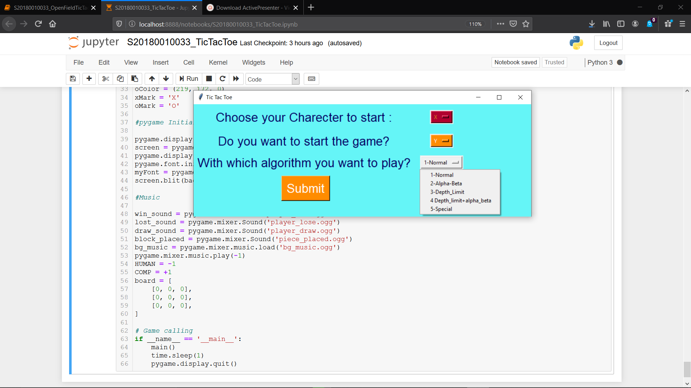
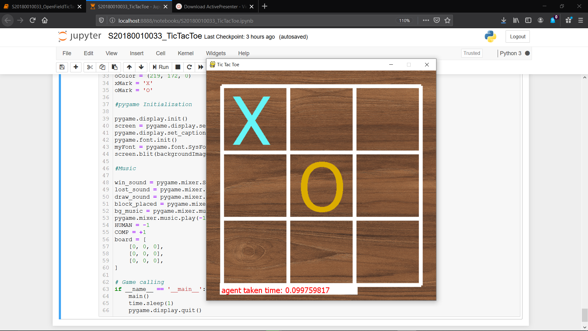
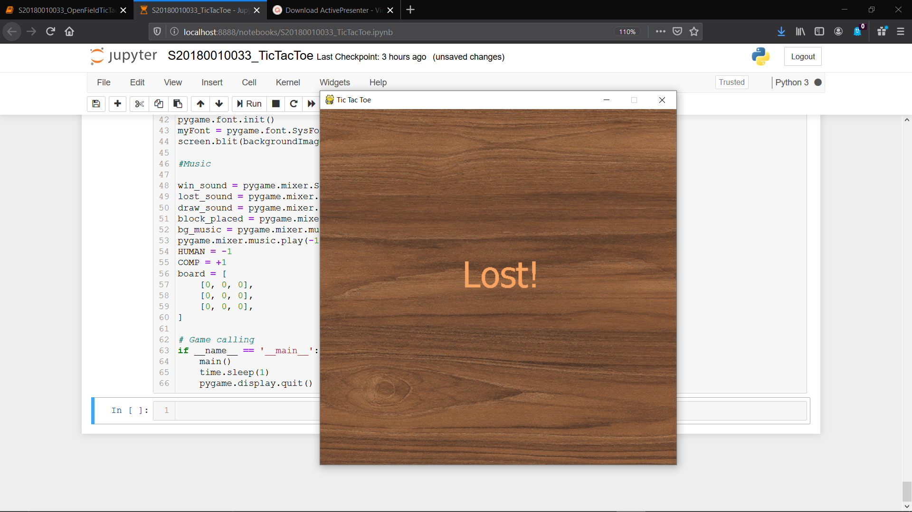
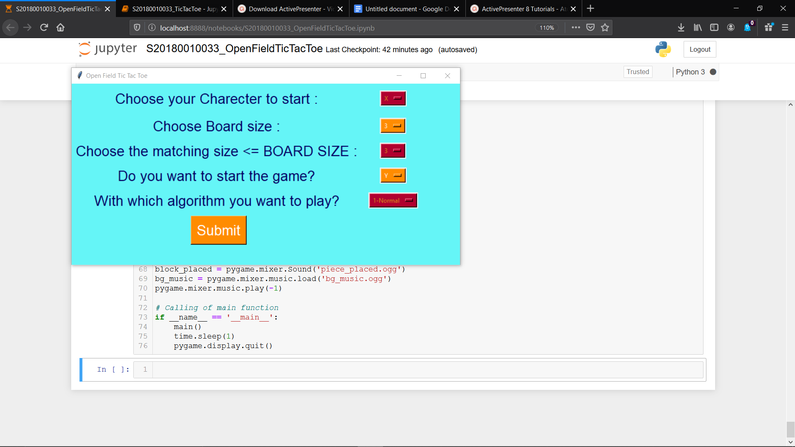
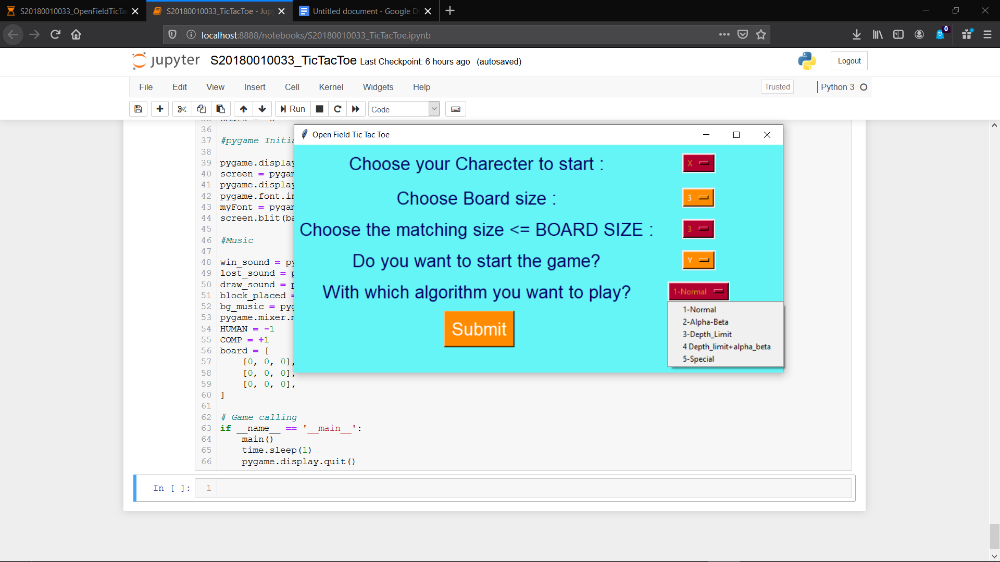
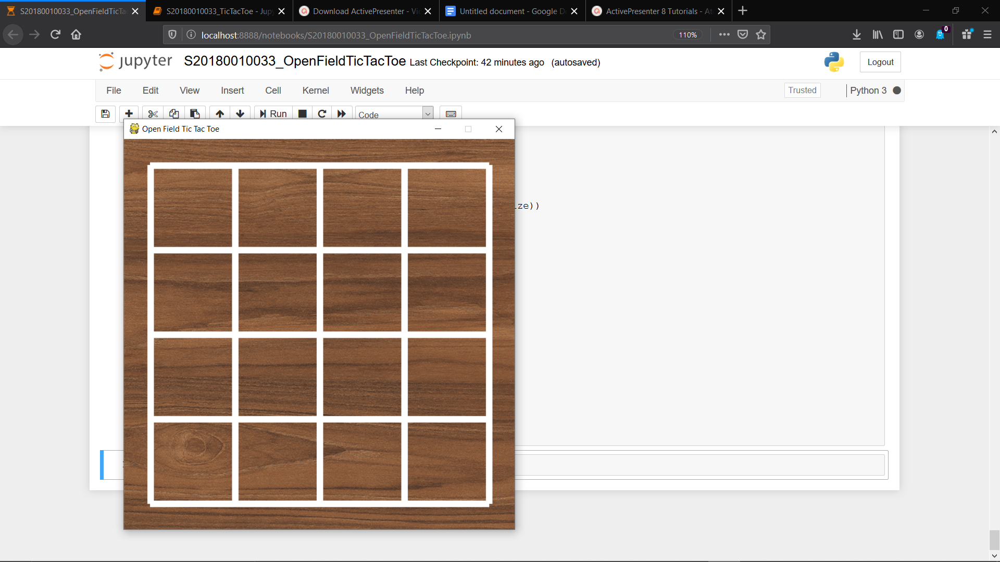
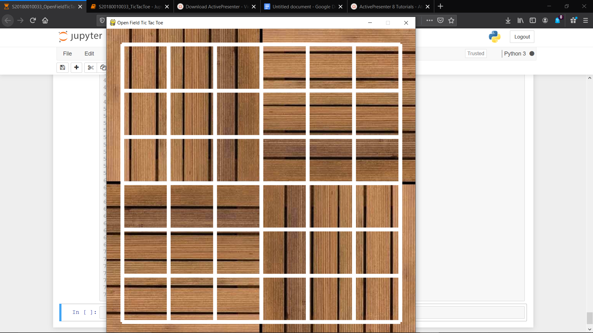

READ-ME
Contents:
About Special Function
About Heuristic
How to play Tic Tac Toe(Basic)
How to play Tic Tac Toe (open Field)
Special Function:
- The thing I focussed on in my special Min max are the starting move and optimal depth,in which the first one is far more important,and maximum of the members will make it as random. From the research I did I came to know that if we place the first choice on one of the corners then the chance of winning is ours if the other player wont place in the middle as their first move and for the second one I did trial and error to obtain at a good value.
- Function that returns all the coordinates of corner elements and choose one randomly

Non Special Function | Special Function |
Heuristic Function:
- +100 for EACH 3-in-a-line for computer.
- +10 for EACH 2-in-a-line (with an empty cell) for the computer.
- +1 for EACH 1-in-a-line (with two empty cells) for the computer.
- Negative scores for opponent, i.e., -100, -10, -1 for EACH opponent's 3-in-a-line, 2-in-a-line and 1-in-a-line.
- 0 otherwise (empty lines or lines with both computer's and opponent's seed).
For explaining let me take a matrix
X | . | .
. | O| O
. | O| O
O - computer
X - Human
As Computer has 2 rows and 2 columns with 2 filled is score is +40
As human has a row and a column 1 filled its score is -2
So total score return by my heuristic is 38
This is extended for Open field Tic Tac Toe also as if m are filled pow(10,m) is returned.
Tic Tac Toe(Basic)
- Restart and Run All
- Now check for a new tab that is opened in Background(Tkinter Menu)

- Now Select the options from dropdown which will appear when you click on the right to the questions
1.Choose your Character : X or O
2.Do you want to start : Y-’yes’ , N-’ no’
3.With which algorithm you want to play? : there will be 5 options
4.Submit : to submit the responses

- Now you can see another pygame pop up window in which you can play the game with the options you opt(sound effects included) and at the bottom left you can see the time taken by the agent

- At the end you can see a window which represents your status in the game(Win,Lose or Draw) and the tab will close automatically.

Tic Tac Toe(open Field)
- Restart and Run All
- Now check for a new tab that is opened in Background(Tkinter Menu)

- Now Select the options from dropdown which will appear when you click on the right to the questions
1.Choose your Character : X or O
2.Choose board size (N): Ranges from 3-7
3.Choose Matching Size(K): Ranges from 3-7 [which should be less than Board size]
4.Do you want to start : Y-’yes’ , N-’ no’
5.With which algorithm you want to play? : there will be 5 options
6.Submit : to submit the responses
- Here there is a trade off for accurate steps and time ,I bent myself towards time hence some steps may be irrelevant(less probability of irrelevance) .Please do choose minmax with depth limit or minmax with depth limit and alpha beta pruning or Special option in algorithm type for faster responses from agent

- Now you can see another pygame pop up window in which you can play the game with the options you opt(sound effects included) and at the bottom left you can see the time taken by the agent
For N = 3,4 board is different from N = 5,6,7 since as grid need to be larger


- At the end you can see a window which represents your status in the game(Win,Lose or Draw) and the tab will close automatically.